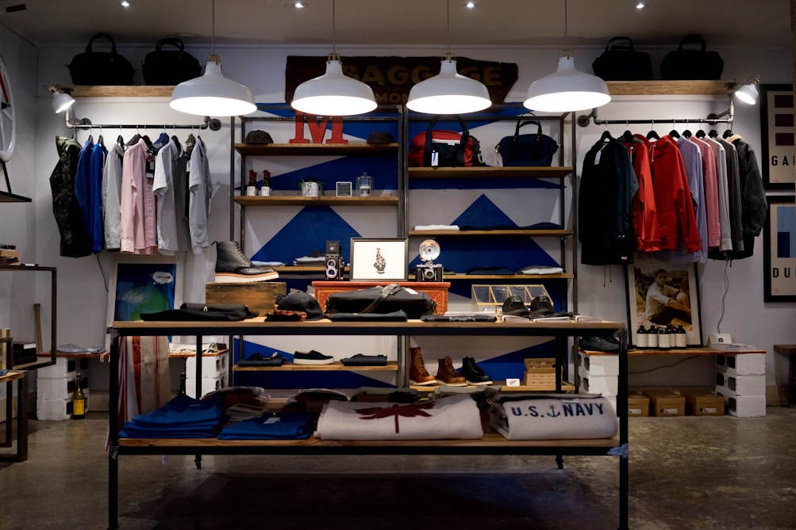

We set out with a simple question: Can the most comfortable sock in the world also help heal the Earth's oceans?

Every morning, millions of people pull on socks without second thought. Yet standard mass-market socks are among the most wasteful garments on Earth: made from pesticide-drenched GMO cotton and cheap petroleum-based synthetic polyester that traps sweat, causes foot odor, and sheds microplastics into ocean waters.
At Bamboo Knit Reef, we reimagined hosiery from the soil up. We harvest organically certified moso bamboo that grows without synthetic fertilizers or pesticides, relying purely on natural rainfall. This bamboo is converted into silky modal and viscose fibers through a closed-loop recycling process where 99.5% of water and organic solvents are recaptured and reused.
To turn this noble fiber into exceptional socks, we partnered with master hosiery knitters in Brescia, Italy. Our 200-needle circular knitting cylinders produce an ultra-dense, cloud-soft fabric that resists pilling, paired with hand-linked seamless toes that make toe-seam friction a thing of the past.
Our commitment extends beyond our textiles. We donate 1% of our total revenue directly to marine biology teams growing and outplanting heat-resilient coral reef nurseries. When you step into Bamboo Knit Reef, you are actively participating in the restoration of our planet's most vital underwater ecosystems.